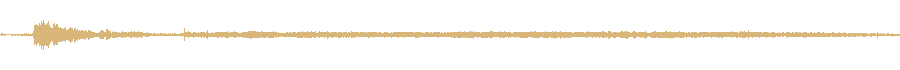
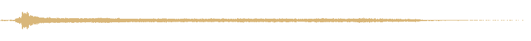
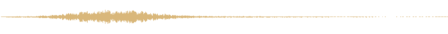

Aujourd'hui : la bougie s'allume au début du vote et s'éteint à la fin avec deux sons provisoires que j'avais fabriqués de toutes pièces (A0 et B0). On les remplace par de vrais sons.
La scène : le vote commence, la bougie s'allume sur la table devant toi ; quand tout le monde a voté ou que le temps est écoulé, elle s'éteint d'un coup. La nuit, la même bougie compte ton tour, son extinction joue deux fois moins fort.
Sans question : les sons viennent de Freesound, licences CC0 ou CC BY seulement (utilisables dans un jeu vendu, les auteurs CC BY seront crédités). Chacun est coupé, nettoyé de son souffle de micro et mis au même volume, entre les clics des menus et les annonces du jeu. Le bouton joue le son au volume où le jeu le jouera.
Le son provisoire fabriqué à la main.
Un coup sec de grattoir, puis la flamme qui prend et brûle un instant.

Match strike 03, scalywhale, CC0
Pas de main ni d'allumette : la mèche s'embrase toute seule, un souffle de feu.
Match Ignite (No Strike), brachern, CC0
Grattée plus nette, la flamme s'emballe davantage avant de se calmer.

20170530_match.igniting, dobroide, CC BY 4.0
Un grattage discret, puis une flamme descendue de cinq demi-tons : plus lourde, un peu surnaturelle.
Match Lighting Candle, devilqube, CC0 ; Match Ignite (No Strike), brachern, CC0
Le son provisoire fabriqué à la main.
Quelqu'un souffle la bougie, court et doux.

blowing out candle, Reitanna, CC0
Quelques battements de flamme avant le souffle final : plus long, plus dramatique.
Candle flame flickers, blown out, DeqstersLab, CC0
Un souffle plus large qui s'étire, comme si la pièce entière soufflait.
Candle blow, JacobEmanuelMadrid, CC0
Un souffle descendu de trois demi-tons, mêlé d'un peu du B1 : sourd, presque un étouffoir.
blow_4, Dragon20C, CC0 ; blowing out candle, Reitanna, CC0
Joue l'allumage puis l'extinction que tu as aimés (A1 et B1 sinon), sur la musique du jeu.